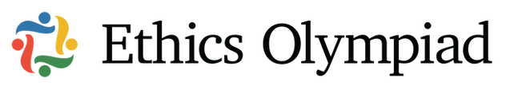

01
Explore a case
Read a short ethical dilemma with your team. Think about who is affected, what matters, and what you would do.

MPI Education · Junior Ethics Olympiad
Run by MPI as an official licensee of the Ethics Olympiad.
A place for curious students to explore everyday dilemmas, explain what they think, and listen carefully to someone else's point of view.
Our junior competition brings small teams together for thoughtful conversations with other schools and friendly judges. Start here to see the format, try an activity, and explore preparation materials.
Express your school's interestWatch a sample heatDates, fees and registration details for MPI's spring event will be announced.
How it works
01
Read a short ethical dilemma with your team. Think about who is affected, what matters, and what you would do.
02
Present your team's position and the reasons behind it. Consider the strongest reasons someone might disagree.
03
Listen to another team, ask constructive questions, and respond to the judge. Teams can agree and still deepen the discussion.
Students defend the view they actually find convincing. Judges consider clear reasoning, attention to different perspectives, thoughtful responses and respectful dialogue.
See it in action
This middle-school example shows the flow of a discussion: a team presentation, commentary, a response and questions from the judge. It is an illustration of the format, not a recording of MPI's new junior event.
Sample heat provided by
Try it with your class
No specialist vocabulary needed. Ask students to give reasons, listen, and consider another answer.
Your class can buy one new playground item. Most students vote for a climbing frame, but a classmate who uses a wheelchair would not be able to play on it. A different option would let everyone play together, although fewer students chose it.
How should the class decide what to buy?
Original MPI introductory activity. This is a classroom exercise, not an official competition case or match timing.
For students and teachers
Explore the Ethics Olympiad materials below to understand the cases, coaching approach and established format. MPI's spring schedule and confirmed competition case set will be announced separately.
Sourced from ethicsolympiad.org/resources/junior-school-resources, with thanks to the Ethics Olympiad and the contributors credited in each document. Some materials use a broader junior age range and regional event arrangements; follow MPI's event information for our ages 9–11 launch.
Information for parents and teachers
There are teams, speaking turns and questions. Students develop their own considered position rather than being assigned a side. Agreement is welcome: a useful question or a new perspective can move the discussion forward.
No prior study of ethical theories is needed. Students begin with understandable situations and practise explaining their reasons, listening and responding with care.
Try one discussion in class or an existing club, then form a small team of up to five students. An adult coach can help students practise taking turns, considering different views and explaining their reasoning.
The established junior format has three heats, with regional medals and no junior international final. MPI will confirm its spring timetable, technical requirements and registration arrangements before the event.
They introduce the Ethics Olympiad format. The kits contain arrangements for other regions, including their ages and schedules. MPI's event information will confirm the rules and case set for our spring competition.
Tell us about your students and how you already run discussions. We'd be happy to explore a first session or answer questions about the spring launch.
Get in touch with MPI